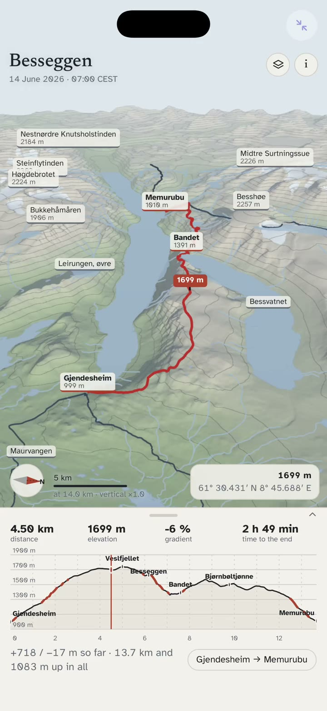
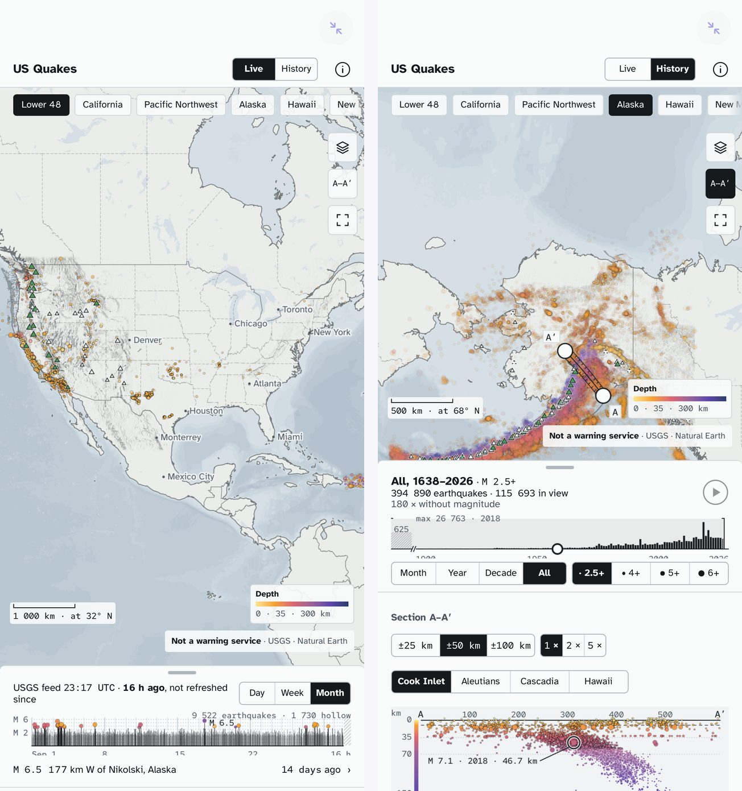
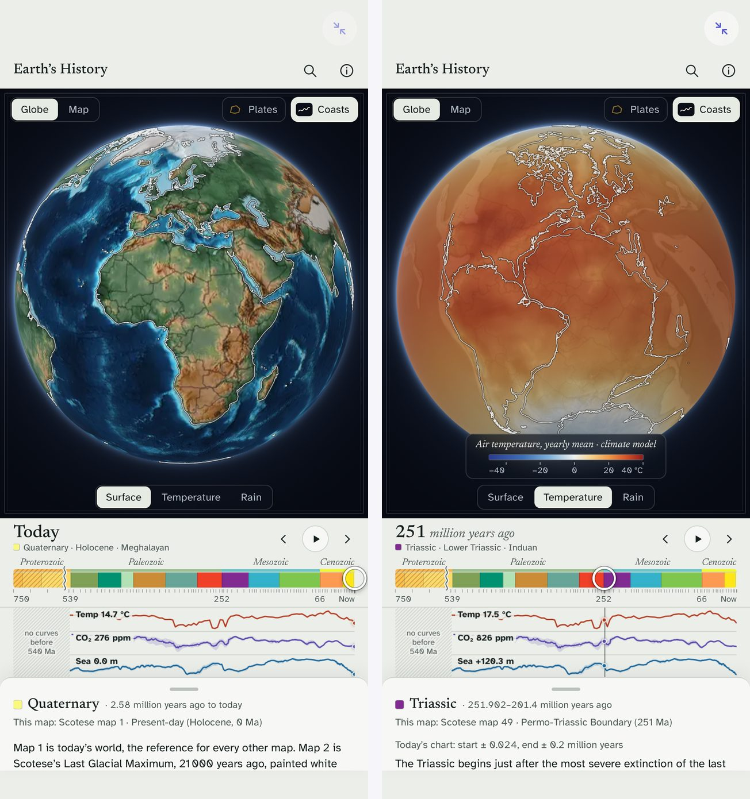
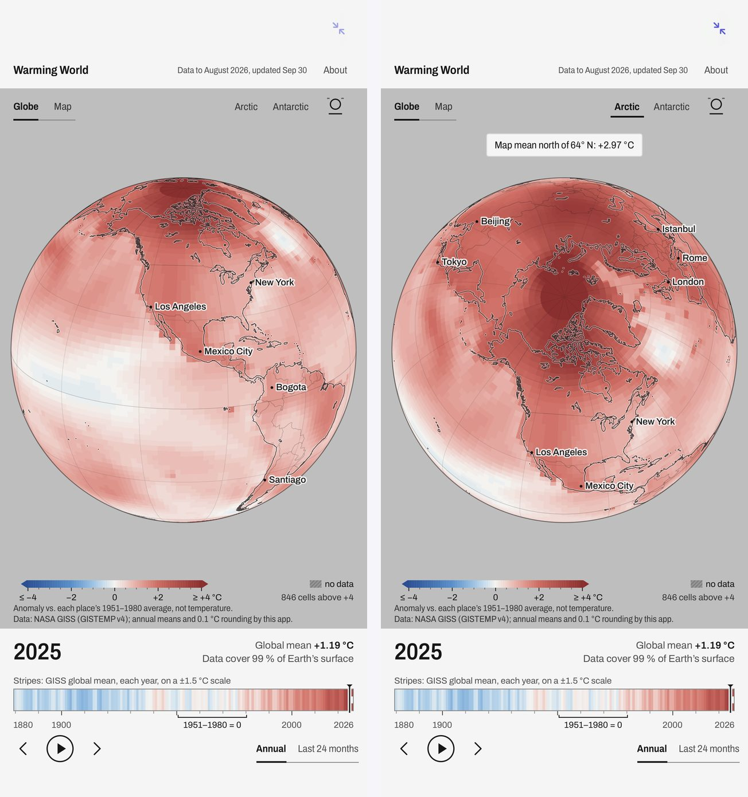
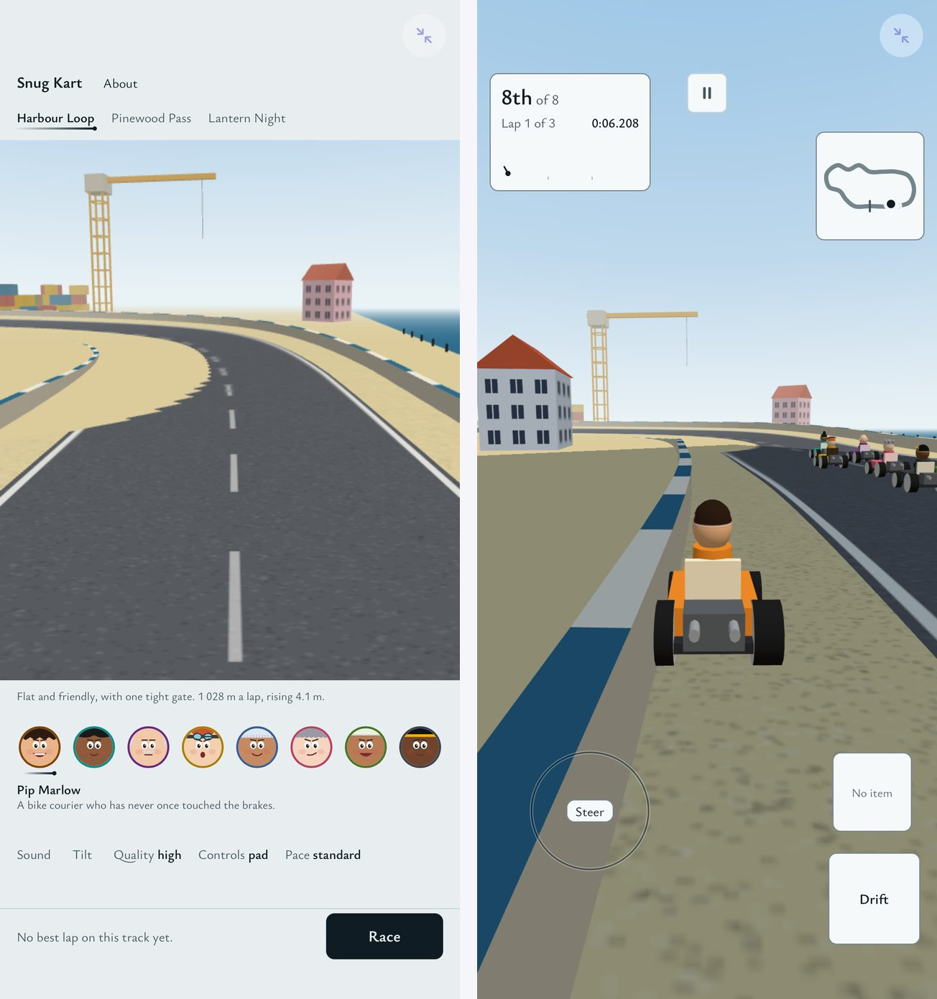

The showpieces
Ten apps built by asking an AI, and the stories of how. All eighteen examples run in your browser.
The open template repository holds eighteen example apps, and its index runs every one of them in your browser, with the data each last published and a ZIP for your iPhone beside it. These ten are the ones to see first. Open in your browser runs the app itself; Get the ZIP is the same app for the phone — open the link in Safari, tap Download, open the download and choose Share → Snuggery. Three taps, nothing to set up. The clips are screen recordings from an iPhone.
Four worlds in three dimensions
-
Milky Way
The Solar System, the Sun's neighbourhood and the galaxy in one continuous zoom, from JPL, Gaia and published catalogues only — no artist's impression anywhere.
Open in your browser Get the ZIP How it was built
6.5 MB · needs nothing
-

Besseggen
The ridge in 3D from Kartverket's 1 m terrain, the marked trail, real sun and shadows, a walking-time profile, viewsheds and named peaks. Not a navigation tool.
Open in your browser Get the ZIP How it was built
17 MB · needs nothing
-
Norne Reservoir
The open Norne oil-field model — 44,431 cells and 36 wells through nine years of production — coloured by what is in the rock, played month by month, exploded by formation, with every well's own rates. Our own run of the public deck, checked against the published results.
Open in your browser Get the ZIP How it was built
15 MB · needs nothing
-
Anatomy
A full human body in 3D: 1,752 real anatomical structures in layers you can peel, fade, isolate and pull apart — down to the vessels of the hands and feet, the parts of the eye and each cusp of the heart valves.
Open in your browser Get the ZIP
25 MB · needs nothing
Three maps
-

Shelf Atlas
The North Sea's oil and gas on a map you pan and pinch: every field outline in the Norwegian, UK, Danish and Dutch sectors, the platforms and the pipelines, the median lines between the four shelves, and a month scrubber from January 1971 to the newest report. Rebuilt weekly from the four regulators' open data.
Open in your browser Get the ZIP
2 MB · needs nothing
-
World Oil & Gas
Every country's oil and gas production from 1900 to the latest Energy Institute year, as a map with a year scrubber, and 7,055 fields from Global Energy Monitor's tracker that follow the same scrubber: a ring from discovery, filled from first production, sized by rate or by remaining reserves.
Open in your browser Get the ZIP
0.7 MB · needs nothing
-

US Quakes
Every earthquake USGS has cataloged around the United States since 1638 — 394 890 of them — on a map drawn like a seismograph's drum record, with the last 30 days of the USGS feed refreshed hourly by a GitHub Action and delivered by a Shortcut. Scrub the timeline from 1900 and play a decade; the plate boundaries draw themselves. Drag a line across Alaska and read the Cook Inlet slab in cross-section, down to 250 km. Seven stories, faults, volcano alert levels, and every sentence about the data in USGS's own words. Built by asking, in a day, in three passes.
Open in your browser Get the ZIP
6.4 MB · needs nothing · live
The planet through time
-

Earth's History
The Earth at 90 moments from 750 million years ago to today, on a globe and on a Mollweide map: Scotese's PALEOMAP reconstructions, a slider whose track is the geological timescale, the pieces of today's crust moving with their plates, a climate model's temperature and rain as lenses, curves of CO₂, sea level and temperature, and 300 cities carried back to where their rock was. Every number has its source and every caveat is on screen. Built by asking, in a day, in three passes: the data, the app, and the look.
Open in your browser Get the ZIP
7 MB · needs nothing
-

Warming World
NASA's GISTEMP record on a globe: every 2° cell's departure from its own 1951–1980 average, year by year since 1880, refreshed monthly from NASA's release by a GitHub Action and delivered by a Shortcut. The year slider is the warming stripes, drawn as an instrument with the base period bracketed; the globe sits on a gray card so the only color on screen is a departure from normal; tap any place and its own line draws itself from 1880. Anomalies are never called temperatures, no data is hatched, the current year is marked partial. Built by asking, in a day, in three passes.
Open in your browser Get the ZIP
1.2 MB · needs nothing · live
And a game
-

Snug Kart
An original kart racer for a phone held upright: eight racers, three tracks, drifting, household items, seven rivals. Every kart, face, track and sound is generated in code at start-up, so the whole game is one 0.5 MB ZIP. Built by asking, in a day, with the design written first.
Open in your browser Get the ZIP
0.5 MB · needs nothing
Eight more, refreshed by the loop
Running Dashboard, Finances, World News, Outdoor Window, Power Hours, Global Wind, Global Weather and Hello Live are apps whose data refreshes on a schedule: a GitHub Action fetches, a Shortcut on your phone copies the file in, the app redraws. Snuggery itself never goes online. How the loop works — and every one of them is on the index, running in your browser, with its ZIP and what it needs.
-
The loop, on a real dashboard
My own Garmin dashboard, not the example: Rebuild Data Now in the ⋯ menu runs the Shortcut, the heart-rate data refreshes in the background, and the Updated stamp changes. Behind it, an hourly GitHub Action pulls from Garmin and a daily scheduled Claude Code session writes the assessment and the week's plan — how the loop works. The Running Dashboard in the template is the same loop with made-up data.
-
Global Weather
Five days of global weather on a map or a globe, drawn as a long exposure: thousands of tracers carried by the forecast's own wind, with the exposure printed under the picture, a time player you can scrub at any speed, and a focus mode. A GitHub Action in the template refreshes its data after each forecast run.
Make your own
Snuggery's Create tab writes the prompt: describe the app you want, and the prompt tells your AI the rules an app needs to follow to run in the sandbox — plain HTML, its data in files beside it, no network. Paste it into whatever AI you use, import the ZIP that comes back, and it runs. Nothing here generates anything; the app is yours to ask for. Back to Snuggery.